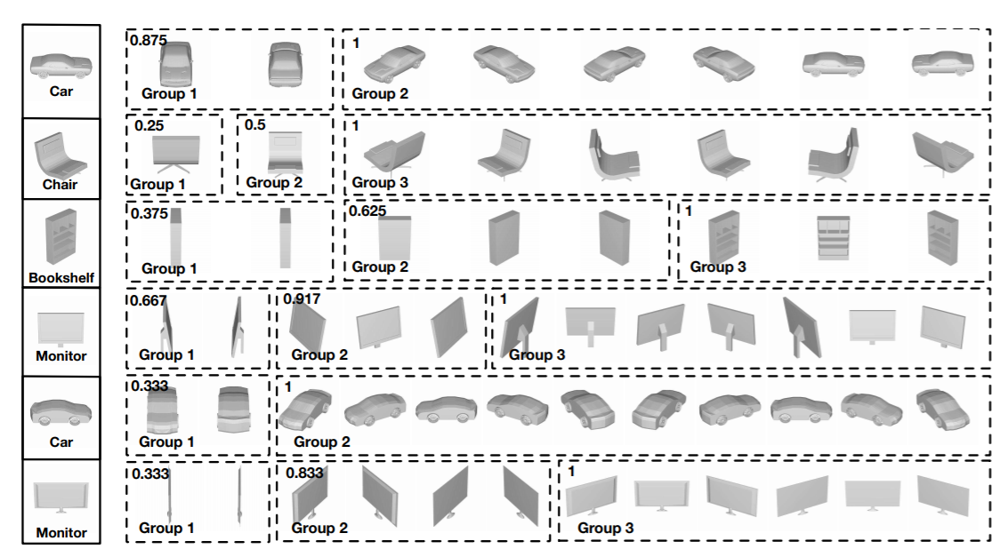
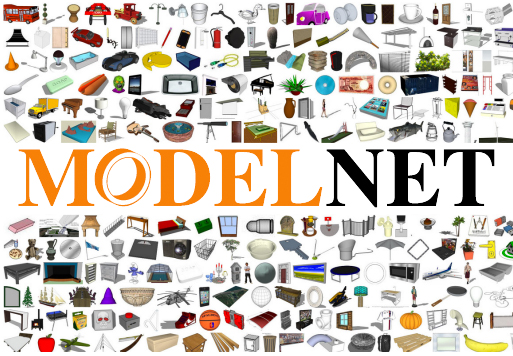
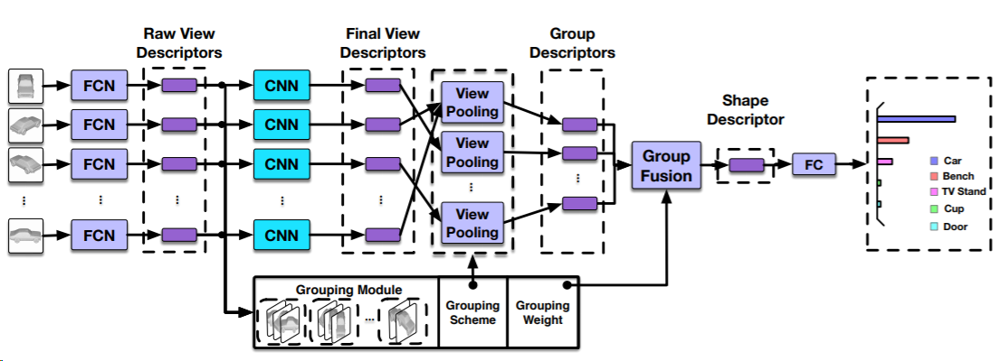
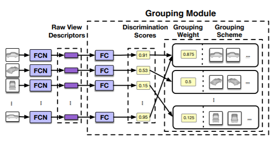

3D形状识别近年来广受关注。但是，现有的用于3D形状识别的深层特征仅限于视图表示直接到形状表示的特征变换，该变换直接从视图级特征中学习形状描述符。尽管在基于视图的3D形状描述方面取得了很多进步，但是视图之间的固有层次相关性和可辨别性尚未得到很好的挖掘，然而这对于3D形状表示非常重要。为了解决这个问题，我们提出了一种可辩别性的3D形状描述的用于分层相关建模的组视图卷积神经网络（GVCNN）框架。我们提出的GVCNN框架由分层的视图描述符-组特征-形状体系结构组成，即从视图级别，组级别和形状级别开始，它们使用分组策略进行组织。具体而言，我们首先使用扩展的CNN提取视图级别描述符。然后，引入分组模块来估计每个视图的可辩别度，基于此模块，可以根据所有视图的可辩别度将所有视图分为不同的组。通过从视图描述符中进行合并，可以进一步生成组级别的描述。最后，所有组级别描述符根据其权重融合到整体的形状级别描述符中。实验结果和与最先进方法的比较表明，我们提出的GVCNN方法可以在3D形状分类和检索任务上实现显着的性能提升。

图1.分组模块输出的分组结果可视化。左边是分组模块的输入。每行的右边是该物体的多视图的分组结果以及每个分组的分数。

图2. ModelNet数据集可视化。
为了评估提出的GVCNN方法的性能，我们在Princeton ModelNet数据集上进行了3D形状分类和检索实验。 ModelNet由来自622个对象类别的127,915个3D CAD模型组成。 我们进一步采用了ModelNet的子集ModelNet40，其中包含40个常见的对象类别。 我们按照3D shapenet进行训练/测试。
可以通过点击下面的按钮来下载这个数据集。
图3 描绘了我们提出的方法的详细流程图。 GVCNN采用GoogLeNet作为基础架构。 “FCN”部分是GoogLeNet的前五层卷积层。 “FC”部分已经出现过两次：一层是GVCNN的最后一层，用于执行分类器，另一层是在“组模块”中，用于从中级表示中提取组可辩别度得分（“FC”的输出）。组模块的输出将融合视图描述符以生成形状描述符。然后将形状描述符发送到一个“FC”层中以获得最终分类结果。给定3D形状，我们首先获取从不同角度捕获的一组视图。每个视图都经过网络的第一部分（FCN），以获取视图级别的原始描述符。然后，使用网络的第二部分（CNN）和组模块分别提取最终视图描述符和组辩别度分数。组辩别度分数用于对这些视图进行分组，并执行组内视图合并步骤以提取组级别描述符。最后，所有分组描述符根据分组模块产生的分组权重被组合为形状级别描述。

图3. GVCNN框架示意图
如图4所示，分组模块使用与GVCNN相同的输入视图。我们使用FC层从原始视图描述符中获得判别分数。然后，我们基于判别分数对这些视图进行分组，以获得分组方案和分组权重。组方案用于监督组内视图池。在组内视图合并之后，将分组权重用于与形状描述符的组组合。

图4. 分组机制的示意图
总的来说我们提出了用于3D形状识别的GVCNN框架。 在这种方法中，引入了分层的形状描述框架，包括视图，组和形状级别描述符。考虑每种形状的视图之间的相关性，并将分组信息用于形状表示。与传统方法相比，该方法不仅考虑了视图级别的合并，而且在合并过程中也考虑了组信息。实验结果和与最新方法的比较证明了该方法的有效性。我们还研究了不同数量的视图对3D形状表示的影响。 结果表明，更多且相对完整的视图可能更好地用于3D形状识别。